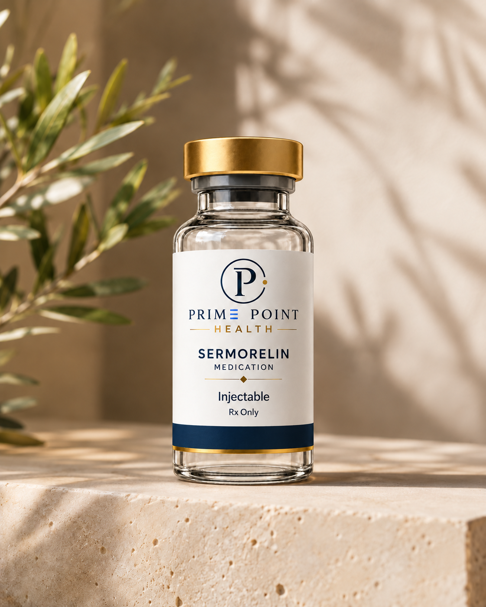

Energy and
Vitality
It has been shown that sermorelin mimics GHRH, a signal that prompts the pituitary gland to release your body’s own growth hormone.

How Sermorelin Works
Sermorelin supports natural growth hormone signaling to improve recovery, repair, and sleep over time.
Stimulates the pituitary to release growth hormone
Increases natural GH production during sleep
Sermorelin has been shown to support muscle repair and recovery processes.
Product illustration. Actual packaging may vary.
Metabolic Health
Sermorelin is a synthetic peptide that works by signaling the pituitary gland to produce and release growth hormone naturally, rather than introducing growth hormone directly into the body.
$225/ month
Prescription only when clinically appropriate. Eligibility and results vary.
Sermorelin is a synthetic peptide that mimics growth hormone-releasing hormone (GHRH), a naturally occurring hormone involved in regulating the body's growth hormone production. Its use requires individualized medical evaluation to determine whether treatment is appropriate.
Sermorelin acts on receptors in the pituitary gland, stimulating the release of the body's own growth hormone. Unlike administering growth hormone directly, sermorelin works through the body's existing hormonal signaling pathway. Treatment decisions should be based on a qualified clinician's assessment of the patient's medical history and individual needs.
It has been shown that sermorelin mimics GHRH, a signal that prompts the pituitary gland to release your body’s own growth hormone.
It has been shown that growth hormone plays a role in muscle metabolism and tissue maintenance. Consistent use of sermorelin has been associated with maintaining lean muscle mass and supporting fat metabolism.
It has been shown that growth hormone release is closely linked to deep sleep, which helps support restoration, energy production, and recovery.
The Prime Point quality standard
Before medication reaches a Prime Point patient, it is supported by a layered quality process designed to verify what is inside, protect its purity, and hold every pharmacy partner to a consistently high standard.
Our pharmacy partners ensure that every batch has been thoroughly potency tested in accordance with FDA guidelines and USP 795 and USP 797.
We ensure our pharmacy partners test for sterility in accordance with USP <71>. This means incubating samples from every batch for at least 14 days. This ensures the samples show no growth of foreign microorganisms, including bacteria and other pathogens, before a passing result is reported.
We hold our pharmacy partners to strict standards for endotoxin testing. Every partner must show that endotoxin levels are well below the USP <85> limit for each medication tested.
Every medication is independently third-party tested, and every pharmacy is rigorously vetted before any partnership begins.
Research suggests that Sermorelin can stimulate the body's own growth hormone release in some adults. Whether this is relevant to concerns such as energy, recovery, or body composition requires an individualized medical evaluation. It’s not recommended for those with active cancer, uncontrolled diabetes, severe sleep apnea, or complete GH deficiency requiring recombinant HGH. Your doctor will determine whether Sermorelin and its intended use are appropriate for you, based on your medical history, any necessary testing, and a review of potential benefits and risks.
Feel more energized, sleep better, build lean muscle, burn fat more efficiently, and recover faster. Sermorelin may help adults with low GH levels achieve these benefits, with results often building over 2–3 months of consistent use.
After you're approved for treatment, you'll be billed according to the plan you select. Your medication is shipped directly to your door in discreet packaging with complimentary shipping. Vials are shipped on an expedited basis. Refills are processed automatically, and you can pause or cancel your subscription at any time.
When prescribed as a subcutaneous injection, Sermorelin is administered into the fatty tissue beneath the skin. Follow the dose, route, and administration instructions provided by your licensed clinician and dispensing pharmacy.
No. Insurance is not required for Sermorelin. Prime Point Health accepts credit cards and offers pay-over-time plans for added flexibility.